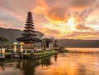

Discover Bali
Discover Bali, the island where lush rice terraces flow into golden beaches
and ancient temples rise above the sea. From the breathtaking sunrise at Mount
Batur to the magical sunset at Tanah Lot, every moment feels like a dream.
Rich in culture, tradition, and natural beauty, Bali offers more than just a
getaway – it’s an experience of serenity, adventure, and timeless wonder.

Top Activities in Bali
-
Watch the sunrise at Mount Batur – Hike up this active volcano for
breathtaking early-morning views.
-
Visit iconic temples – Tanah Lot, Uluwatu, and Besakih Temple are must-sees
for history and culture.
-
Relax on stunning beaches – Enjoy the vibrant sands of Seminyak, Canggu, or
the calm waters of Nusa Dua.
How to Plan your trip to Bali from Pakistan
- Check Visa Requirements
- Book Flights to Bali
-
Best Time to Visit
-
April to October → Dry season, perfect for beaches and outdoor
adventures.
- November to March → Wet season, but less crowded and cheaper.
learn more about Bali
Here are some useful links where you can search out about Bali.
Contact us
For more information, Please
contact us here.